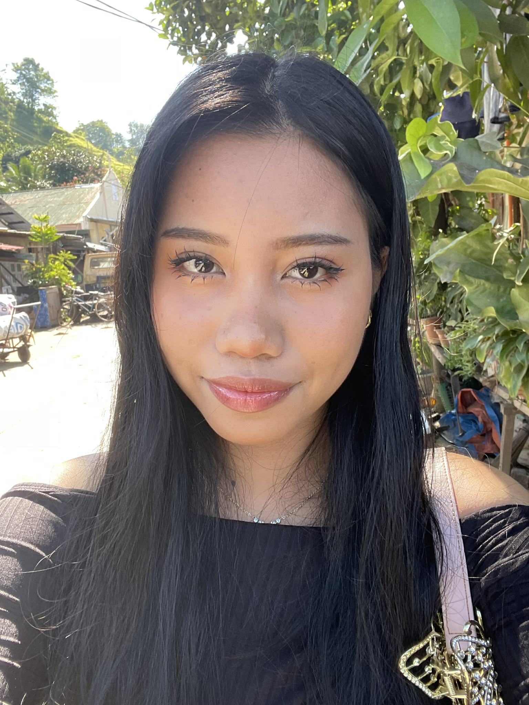

About Me
Email:
flores.zyra0605@gmail.com
GitHub:
github.com/FloresZyra
Hi! I'm Zyra Nadine A. Flores 20 years old, female. I was born on November 6, 2005, in Barra Opol, Misamis Oriental. I currently live in Calaanan, Canitoan, Cagayan de Oro City. A scholar and a student at the University of Science and Technology of Southern Philippines (USTP). I study Bachelor of Science in Information Technology, focusing on innovation and coding/programming. I graduated senior high school (SHS) from Liceo de Cagayan University, ICT major. I am proficient in Python, HTML, and CSS. a tech enthusiast and student from Canitoan, Cagayan de Oro City.
As someone who loves both logic and creativity, I am currently navigating the exciting world of Information Technology at USTP. Whether I am writing code in Python or designing layouts with CSS, I am always looking for new ways to learn and innovate. This portfolio is designed to help you get to know the person behind the code. Feel free to browse through my introduction, check out my hobbies, or reach out to me directly in the Send Me A Message section
Skills
- HTML
- CSS
- JavaScript
- Web Development
- Frontend
- HTML
- CSS
- JavaScript
- Backend
Education
| Program | Institution | Year Graduated |
|---|---|---|
| College | USTP -CDO Campus | 2028 |
| Senior High School | Liceo de Cagayan University | 2024 |